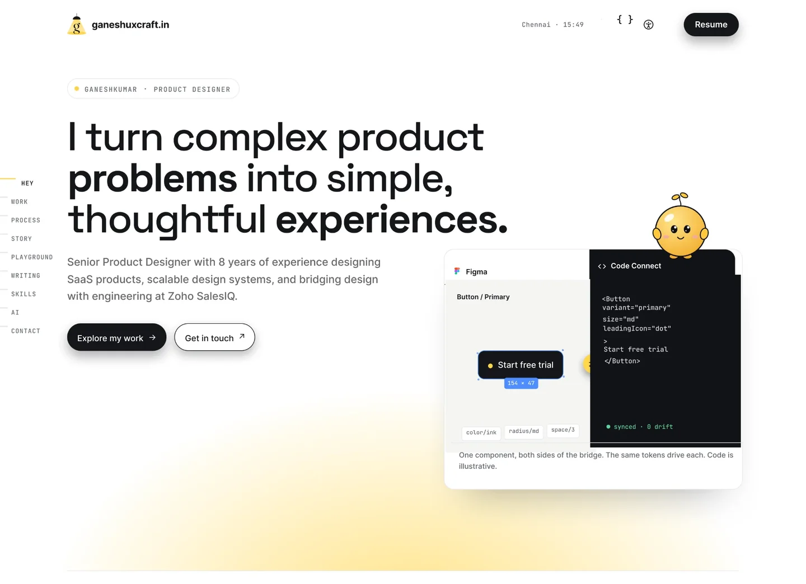
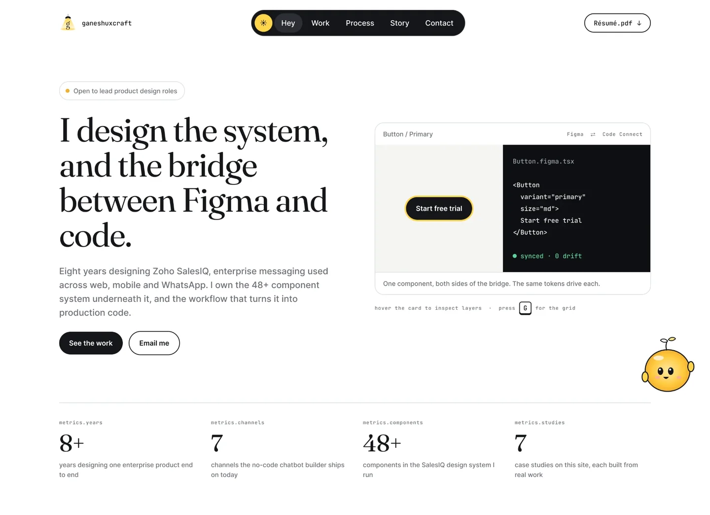

The setup
Three tools, one loop.
Design in Figma
Every section started as a frame on the Portfolio v2 page. Claude reads the frames through Figma MCP, so the hero copy, spacing and the pendant mark came from the file, not from a description.
Build with Claude Code
I describe the change, Claude edits the files, I look at it in the browser. Most changes are one or two sentences from me; some took ten rounds of “not like that”.
Review, then upload
Each round ends as a commit and a zip. I upload to GitHub myself and the page is live within minutes. Nothing goes up that I have not seen rendered.
AI draft, my final
Drag the handle. Left is Claude's first pass, right is what shipped.




Both pairs are renders of real commits in this repository, before and after. The case-study pages are not shown here because the AI drafts for them were never saved as images.
The timeline
From the first upload to today, by day.
First upload
The site goes live on GitHub Pages with a custom domain. HTML, CSS and JavaScript, no framework, no build step.
Sunny learns to act
The mascot gets its acts, emotions and synthesized sound cues, and starts greeting visitors.
Seven case studies
Reports, Brand configuration, Outbound and Feedback join Zobot, the design system and the Operator Console.
The pendant mark
The lamp becomes the logo and favicon, the Figma v2 page is applied, the theme switch moves to the nav pill.
Review pass
Accessibility fixes, WebP gallery with a lightbox, the résumé PDF, the component inspector with Figma counterparts, scroll reveals.
The interactive layer
Career map, hiring page and printable résumé, keyboard shortcuts, Sunny's reactions, collage gallery, the 404, Ask Sunny, and the pages you are reading now.
What is in the box
The parts that took the most rounds.
Sunny
An SVG mascot with sixteen emotions and a dozen acts, built from a Figma frame. Press A to ask it something.
Open →Component inspector
Press I on the home page. Hover any layer to see its tokens, click to pin it and see the Figma counterpart.
Open →Step 04, replayed
The prompt-to-component loop as a looping animation under the pipeline.
Open →Curious about the code?
It is all in the page source: no bundler, no framework. View source on any page, or ask Sunny.